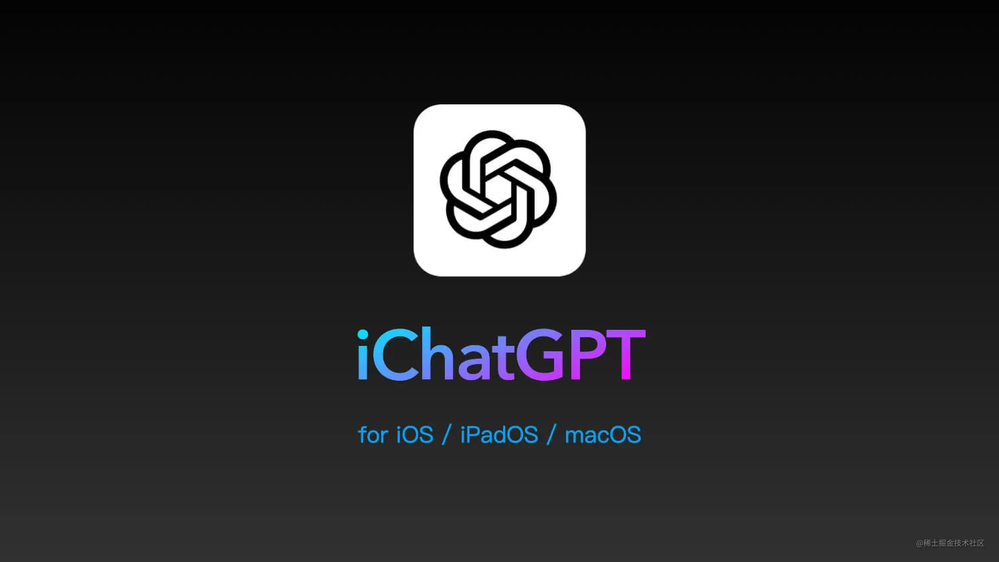
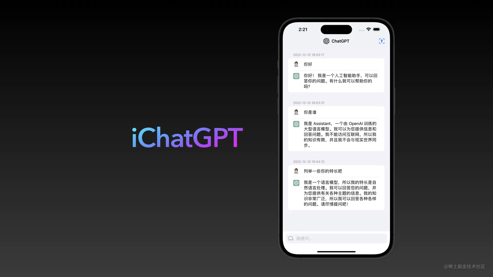
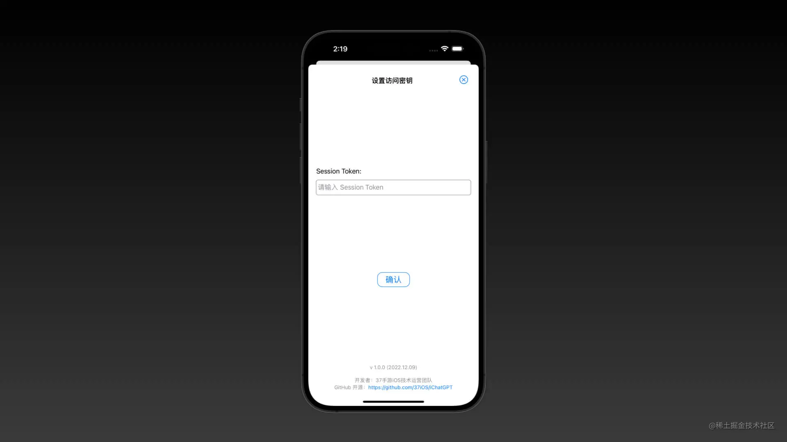
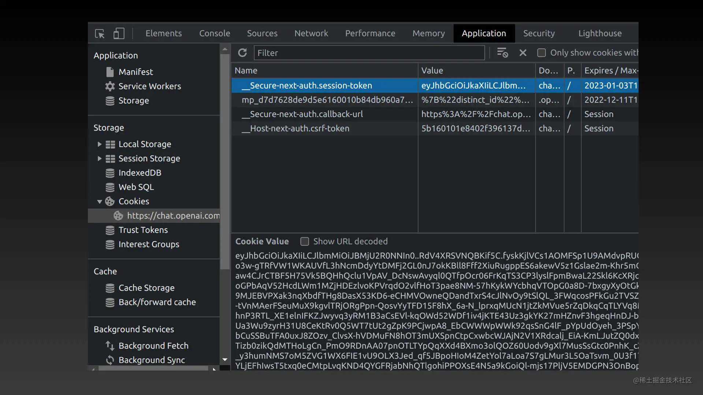
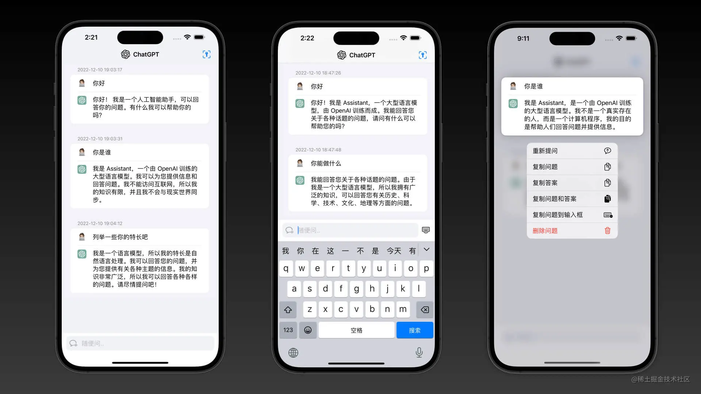
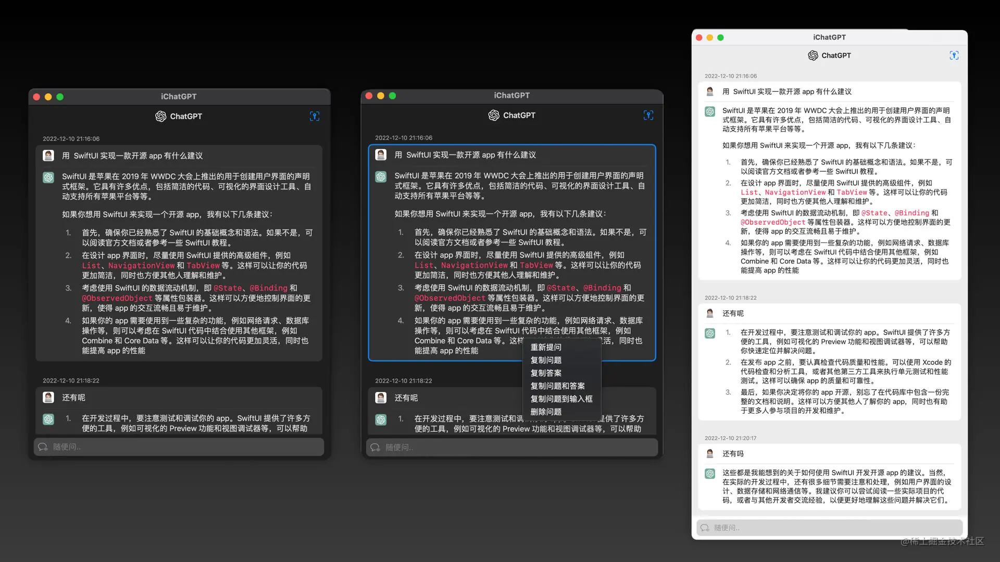
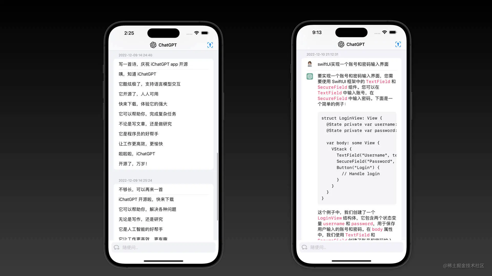

原文链接：https://juejin.cn/post/7175051294808211512?

一、前言
关于 ChatGPT 的话题，大家都不陌生，我们直入话题，因为 ChatGPT 目前限制中国访问服务，所以如果直接使用 ChatGPT 网页进行对话，还是不太方便。通过 ChatGPT SessionToken 就可以不限制网络访问，所以大家发挥想象力实现各种的聊天机器人、小程序，而原生 app 可能体验更好！所以就有了 iChatGPT！一款用 SwiftUI 实现的开源 ChatGPT app，欢迎大家关注和提 PR。
二、iChatGPT
GitHub 开源地址：github.com/37iOS/iChat…
目前 v1.1.0，实现 ChatGPT 基本聊天功能：
- 可以直接与 ChatGPT 对话，并且保留上下文；
- 可以复制问题和回答内容；
- 可以快捷重复提问等
支持系统：
- iOS 14.0+
- iPadOS 14.0+
- macOS 11.0+
三、App 使用介绍

首先，需要点击 app 右上角图标，添加 ChatGPT SessionToken 密钥才能使用，否则无法请求。

获取 SessionToken 的方法很多，比如抓网络请求，其中浏览器方法最简单：
- 登录 chat.openai.com/chat
- 按 F12 打开控制台（macOS 可以用快捷键 command + option + I ）
- 切换到 Application(应用) 选项卡，找到 Cookies （Safari 浏览器是 储存空间 选项卡）
- 复制 __Secure-next-auth.session-token 的值，添加到 app 后确认。

iOS 操作的界面： 
macOS 操作界面： 
四、App 实现介绍
使用 SwiftUI 大概几个小时就完成所有的工作，方便跟苹果生态实现。实现的难点就可能就是模拟 ChatGPT 请求过程。目前是根据 A-kirami/nonebot-plugin-chatgpt 项目中的 python 实现，用 Swift 重写了一次，而 ChatGPT 登陆暂时没有实现，大家可以提 pr。
最后封装的网络请求类 ChatGPT.swift
class Chatbot {
let apUrl = "https://chat.openai.com/"
let sessionTokenKey = "__Secure-next-auth.session-token"
let timeout = 30
var sessionToken: String
var authorization = ""
var conversationId = ""
var parentId = ""
let id = ""
init(sessionToken: String) {
self.sessionToken = sessionToken
}
func headers() -> [String: String] {
return [
"Host": "chat.openai.com",
"Accept": "text/event-stream",
"Authorization": "Bearer \(self.authorization)",
"Content-Type": "application/json",
"User-Agent": "Mozilla/5.0 (Macintosh; Intel Mac OS X 10_15_7) AppleWebKit/605.1.15 (KHTML, like Gecko) Version/16.1 Safari/605.1.15",
"X-Openai-Assistant-App-Id": "",
"Connection": "close",
"Accept-Language": "en-US,en;q=0.9",
"Referer": "https://chat.openai.com/chat",
]
}
func getPayload(prompt: String) -> [String: Any] {
var body = [
"action": "next",
"messages": [
[
"id": "\(UUID().uuidString)",
"role": "user",
"content": ["content_type": "text", "parts": [prompt]],
]
],
"parent_message_id": "\(self.parentId)",
"model": "text-davinci-002-render",
] as [String: Any]
if !self.conversationId.isEmpty {
body["conversation_id"] = self.conversationId
}
return body
}
func refreshSession() async {
let cookies = "\(sessionTokenKey)=\(self.sessionToken)"
let url = self.apUrl + "api/auth/session"
let userAgent = "Mozilla/5.0 (Macintosh; Intel Mac OS X 10_15_7) AppleWebKit/605.1.15 (KHTML, like Gecko) Version/16.1 Safari/605.1.15"
var request = URLRequest(url: URL(string: url)!)
request.httpMethod = "GET"
request.addValue(userAgent, forHTTPHeaderField: "User-Agent")
request.addValue(cookies, forHTTPHeaderField: "Cookie")
do {
let (data, response) = try await URLSession.shared.data(for: request)
let json = try JSONSerialization.jsonObject(with: data, options: [])
if let dictionary = json as? [String: Any] {
// Use the dictionary here
if let accessToken = dictionary["accessToken"] as? String {
authorization = accessToken
}
}
guard let response = response as? HTTPURLResponse,
let cookies = HTTPCookieStorage.shared.cookies(for: response.url!) else {
// handle error
print("刷新会话失败: <r>HTTP:\(response)")
return
}
for cookie in cookies {
if cookie.name == sessionTokenKey {
self.sessionToken = cookie.value
UserDefaults.standard.set(cookie.value, forKey: ChatGPTSessionTokenKey)
}
}
}
catch {
print("刷新会话失败: <r>HTTP:\(error)")
}
}
func getChatResponse(prompt: String) async -> String {
if self.authorization.isEmpty {
await refreshSession()
}
let url = self.apUrl + "backend-api/conversation"
var request = URLRequest(url: URL(string: url)!)
request.httpMethod = "POST"
request.allHTTPHeaderFields = headers()
let dict = getPayload(prompt: prompt)
do {
let jsonData = try JSONSerialization.data(withJSONObject: dict, options: [])
request.httpBody = jsonData
let (data, response) = try await URLSession.shared.data(for: request)
guard let response = response as? HTTPURLResponse else {
let err = "非预期的响应内容: <r>HTTP:\(response)"
print(err)
return err
}
if response.statusCode == 429 {
return "请求过多，请放慢速度"
}
guard let text = String(data: data, encoding: .utf8) else {
return "非预期的响应内容: 内容读取失败~"
}
if response.statusCode != 200 {
let err = "非预期的响应内容: <r>HTTP:\(response.statusCode)</r> \(text)"
print(err)
return err
}
let lines = text.components(separatedBy: "\n")
// 倒数第四行，第6个字符后开始
let str = lines[lines.count - 5]
#if DEBUG
print(str)
#endif
let jsonString = str.suffix(from: str.index(str.startIndex, offsetBy: 6))
guard let jsondata = jsonString.data(using: .utf8) else {
return ""
}
let json = try JSONSerialization.jsonObject(with: jsondata, options: [])
guard let dictionary = json as? [String: Any],
let conversation_id = dictionary["conversation_id"] as? String,
let message = dictionary["message"] as? [String: Any],
let parent_id = message["id"] as? String,
let content = message["content"] as? [String: Any],
let texts = content["parts"] as? [String],
let parts = texts.last
else {
return "解析错误~"
}
self.parentId = parent_id
self.conversationId = conversation_id
return parts
}
catch {
return "异常：\(error)"
}
}
}
唯一可以说说的就是，ChatGPT 的 backend-api/conversation 接口返回的内容，为了实现一个连接打开的效果，返回了一堆的数据。例如一个回答是 "我无法确定全球当前的人口数量，因为我没有浏览网页的能力。"，返回的内容是这样：
data: {"message": {"id": "xxxx", "role": "assistant", "user": null, "create_time": null, "update_time": null, "content": {"content_type": "text", "parts": ["我"]}, "end_turn": null, "weight": 1.0, "metadata": {}, "recipient": "all"}, "conversation_id": "xxxx", "error": null}
data: {"message": {"id": "xxxx", "role": "assistant", "user": null, "create_time": null, "update_time": null, "content": {"content_type": "text", "parts": ["我无"]}, "end_turn": null, "weight": 1.0, "metadata": {}, "recipient": "all"}, "conversation_id": "xxxx", "error": null}
data: {"message": {"id": "xxxx", "role": "assistant", "user": null, "create_time": null, "update_time": null, "content": {"content_type": "text", "parts": ["我无法"]}, "end_turn": null, "weight": 1.0, "metadata": {}, "recipient": "all"}, "conversation_id": "xxxx", "error": null}
中间省略xxxx行
中间省略xxxx行
中间省略xxxx行
data: {"message": {"id": "xxxx", "role": "assistant", "user": null, "create_time": null, "update_time": null, "content": {"content_type": "text", "parts": ["我无法确定全球当前的人口数量，因为我没有浏览网页的能力"]}, "end_turn": null, "weight": 1.0, "metadata": {}, "recipient": "all"}, "conversation_id": "xxxx", "error": null}
data: {"message": {"id": "xxxx", "role": "assistant", "user": null, "create_time": null, "update_time": null, "content": {"content_type": "text", "parts": ["我无法确定全球当前的人口数量，因为我没有浏览网页的能力。"]}, "end_turn": null, "weight": 1.0, "metadata": {}, "recipient": "all"}, "conversation_id": "xxxx", "error": null}
所以，需要按行分割，然后取倒数第四行的内容，再去掉 data: 字符才是我们想要的 json 内容。
let lines = text.components(separatedBy: "\n")
// 倒数第四行，第6个字符后开始
let str = lines[lines.count - 5]
当然，目前 ChatGPT 还是 beta 阶段，所以暂时没有开放 API，后续如果提供 API，就会更加方便！
五、ChatGPT 的一些问题
是否收费
目前 ChatGPT 是 beta 免费使用阶段，未来 API 请求会收费，具体可参考 openai.com/blog 。
修改头像
ChatGPT 对话的个人头像，大家发现无法有 openai.com 上进行修改。因为目前使用的是 Gravatar 服务。
Gravatar，全称 Globally Recognized Avatar。翻译成中文叫：全球通用头像。
Gravatar 的概念首先是在国外的独立 WordPress 博客中兴起的，当你到任何一个支持Gravatar的网站留言时，这个网站都会根据你所提供的Email地址为你显示出匹配的头像。当然，这个头像，是需要你事先到 Gravatar 的网站注册并上传的，否则，在这个网站上，就只会显示成一个默认的头像。
简单来说，就是头像链接为 https://s.gravatar.com/avatar/xxx，其中 xxx 就是你登陆邮箱的 MD5 值，只要在 Gravatar 注册验证了这个邮箱，你就可以更新头像，或者任何人都可以获取你的头像，只要知道你的邮箱。详细可以参考：Image Requests - Globally
有趣的对话
写一首诗，庆祝 iChatGPT app 开源： 
咦，知道 iChatGPT
它酷炫极了，支持语言模型交互
它开源了，人人可用
快来下载，体验它的强大
它可以帮助你，完成复杂任务
不论是写文章，还是做研究
它是程序员的好帮手
让工作更高效，更愉快
啦啦啦，iChatGPT
开源了，万岁！
直呼牛~
六、总结
目前 iChatGPT 开源地址：github.com/37iOS/iChat… 。还有很多功能没有实现，比如：
- 保存对话
- 代码没有高亮
显示个人头像（v1.1.0 已实现）请求失败重试等等（v1.1.0 已实现）
欢迎大家提 PR ！